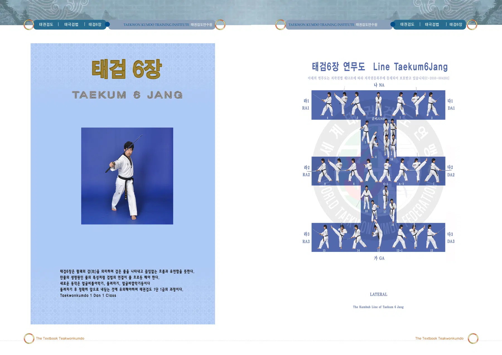
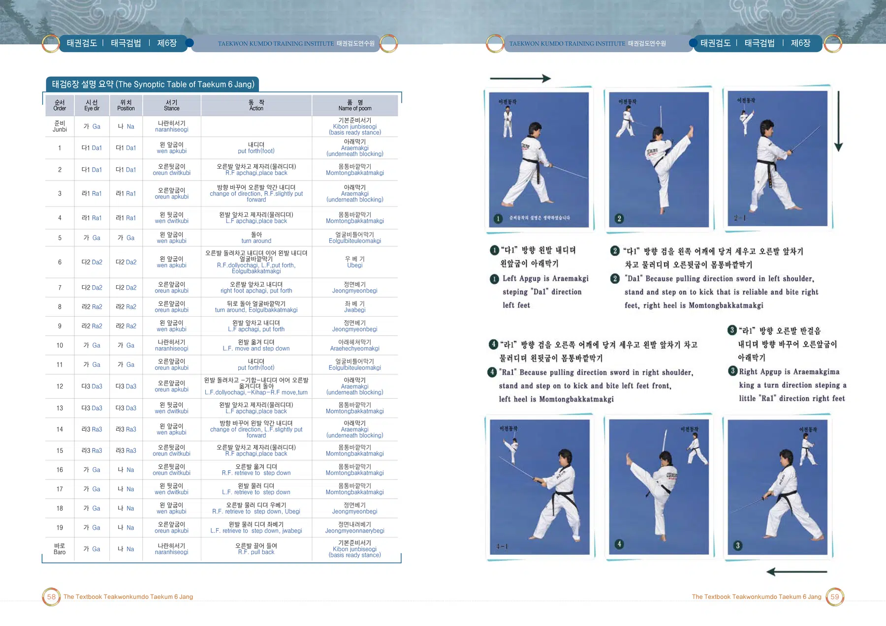
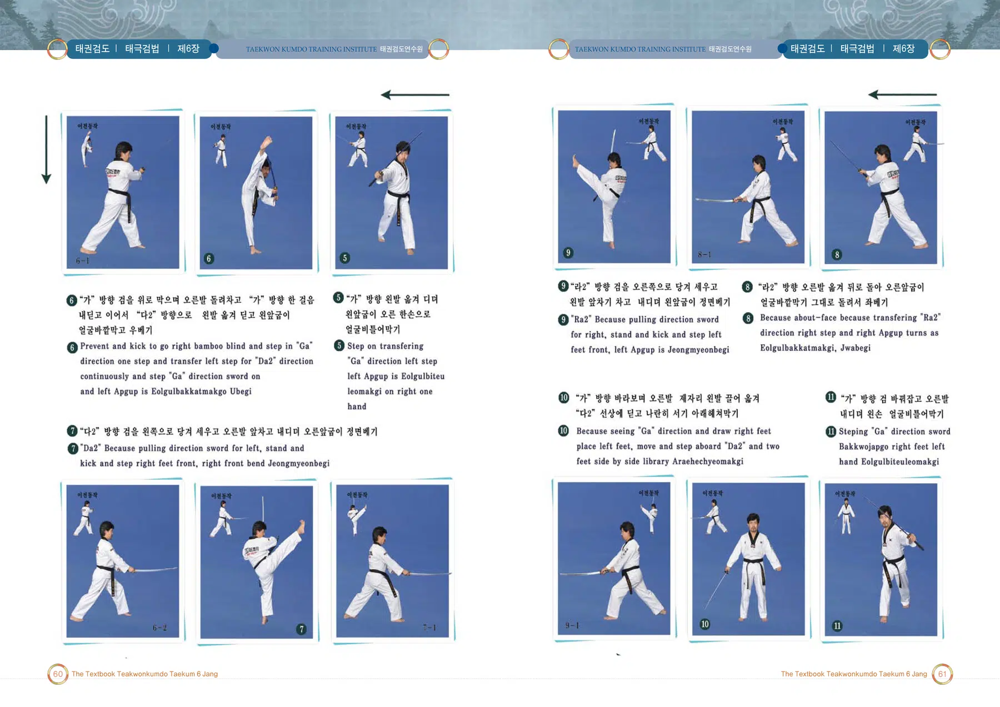
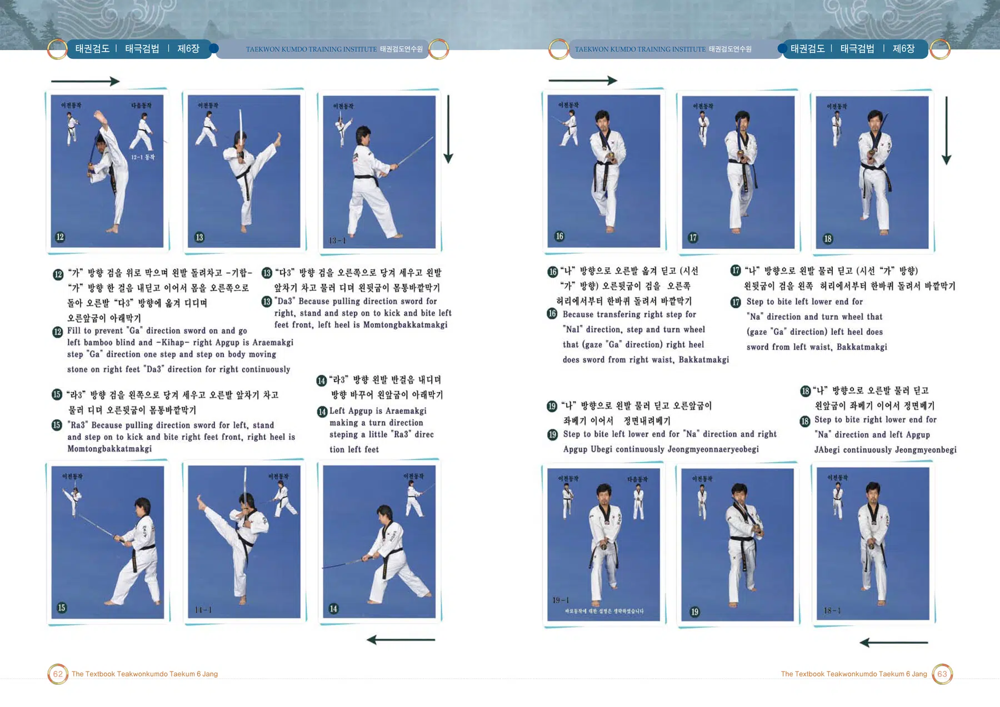

태검6장
감(坎): 물의 흐름과 유연한 검법의 연결을 뜻함
출처: 태권검도 교본. 아래 설명은 제공된 초안의 뜻풀이 요약이며, 원문은 교본 이미지에서 확인할 수 있습니다.
태검6장의 뜻과 상징
팔괘의 감(坎)은 물을 상징하며 끊임없는 흐름과 유연함을 뜻한다. 검법의 연결이 물처럼 자연스럽게 이어지는 것을 강조한다.
태권검도 교본 인쇄 181쪽의 설명을 바탕으로 요약한 해설입니다.
태검6장 교본 자료
이미지를 누르면 확대됩니다. 확대 화면에서는 좌우로 이동하여 동작과 설명을 확인하세요.



